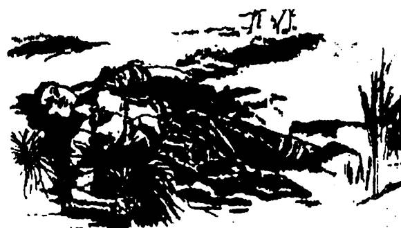
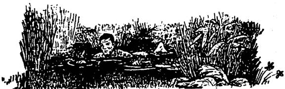
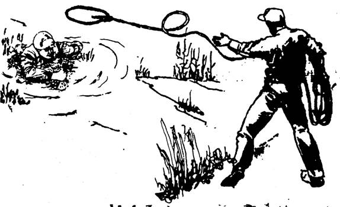

Dấu hiệu để báo cho các bạn biết vùng lầy lún hoặc cát lún là sự hiện diện của những mạch nước trào từ từ ở dưới đất lên. Những mạch nước nầy giữ cát, bùn và các tạp chất lơ lửng một lớp (có khi) rất mỏng. Chúng ta thường gặp những nơi như thế nầy ở vùng đầm lầy nhiệt đới (có khi rộng hàng ngàn hecta). Đất ở đầm lầy xốp, mềm, đi đứng khó khăn, ở đó còn có những chỗ có sức lún khủng khiếp, nếu người hay động vật lọt vào mà không biết cách tự cứu, có thể bịt dìm chết. Ngoài ra, sự nguy hiểm còn do khí hậu ở đầm lầy rất ẩm ướt, lạnh giá, đủ sức làm cho người ta chết cóng. Đây là một khu vực rất tồi tệ, nếu chúng ta bị lạc vào một vùng như thế nầy thì thật là tai hoạ.
Trường hợp các bạn buộc phải di chuyển băng qua đầm lầy, thì xin các bạn lưu ý những điểm sau:
- Cầm theo gậy nhẹ, dài, vừa dò đường vừa làm vật cản để bám víu khi bị sa lầy.
- Đi men theo vùng đất có cây cối, đặt chân lên những bụi cỏ, nếu dẫm mạnh mà thấy mặt đất rung rinh thì đừng bước tới mà đi vòng để tránh.
- Những nơi có mặt đất bằng phẳng, không cây cỏ, có màu xanh đen hay đóng rêu thì thường là vũng lầy. Hãy cẩn thận.
- Tuyệt đối không di chuyển trong đầm lầy vào ban đêm, hay khi mưa gió, sương mù, tuyết đổ… Những lúc nầy nên tìm chỗ trú ẩn khô ráo, kín gió, chờ cho đến lúc thuận tiện.
- Không nên cởi ba lô, áo mưa…. Khi di chuyển trong đầm lầy. Nếu bị lún, những vật nầy sẽ tăng thêm lực cản như những cái phao.
- Nếu có bạn đồng hành, tốt nhất nên dùng dây cột lại với nhau để có thể cứu viện cho nhau.
- Vì phải tránh những vũng lầy và chướng ngại, cho nên các bạn rất dễ bị mất phương hướng. Phải kiểm tra bằng địa bàn thường xuyên. Nếu không có địa bàn, phải chọn một điểm chuẩn dễ trông thấy để làm đích mà đi tới.
- Nước đầm lầy tuy nhiều, nhưng phần lớn là không uống được. Chúng ta nên thu thập nước mưa hay nước ở các dòng chảy mạnh.
- Cố gắng giữ quần áo khô ráo, vì ban đêm ở vùng đầm lầy thường rất lạnh, dễ bị thương tổn do rét cóng.
- Nếu phải trụ lại ở vùng đầm lầy, các bạn nên tạo những con đường đi lại bằng cách lót ván, thân cây, cành cây, cỏ khô… hoặc đánh dấu những nơi có thể đi lại được.
Nói chung, đầm lầy là một nơi tồi tệ khi các bạn cần di chuyển hay sinh sống. Nếu có thể được, các bạn nên đi vòng để tránh.
SA LẦY
Nếu phát hiện hai chân các bạn đang bị lún dần thì không được vội vàng rút chân hoặc vùng vẫy, vì càng vùng vẫy thì càng bị lún nhanh hơn và cũng mau chóng tiêu hao sức lực hơn. Các bạn hãy bình tĩnh sử dụng một trong hai phương pháp sau:
Phương pháp 1
Nhanh chóng và nhẹ nhàng ngã người ra phía sau, nằm ngửa mặt hướng lên trên. Đồng thời giang rộng hai tay để tăng diện tích tiếp xúc với mặt lầy. Nếu có gậy dò đường thì lót nằm ngang ở dưới cơ thể.
Sau khi đã nằm xuống thì nhẹ nhàng rút chân lên, dùng tư thế như bơi ngửa chậm rãi di chuyển về phía đất cứng vừa mới đi qua. Vói tay lên đầu, nếu có gốc cây, gốc cỏ… thì nắm lấy để mượn lực mà kéo người tới.
Cẩn thận từng động tác một, chầm chậm để cho bùn và cát có đủ thời gian lấp đầy những chỗ trống do tứ chi hay cơ thể rút đi.

Phương pháp 2
Dang tay ra, nằm sấp xuống, bụng và ngực ép sát trên bùn, lót gậy dò đường xuống dưới ngực. Tìm cách rút một chân lên, co lại, dùng toàn bộ cẳng chân đó tì lên mặt lầy rồi từ từ rút chân kia lên. Khi đã rút được hai chân lên rồi, thì từ từ trườn tới như rắn hay như tư thế bơi sấp. Phân bố trọng lượng cơ thể cho đều.

• Nếu có người đồng hành bị sa lầy, thì không nên vội vàng liều lĩnh lao tới cứu, mà bảo người đó nằm ngửa, bất động. Sau đó, cẩn thận thăm dò từng bước chân. Chỉ khi nào biết chắc là đất dưới chân mình có thể chịu đựng được thì mới tiến tới gần nạn nhân, ném dây hay đưa gậy cho họ nắm lấy, rồi cùng với sự hỗ trợ của chúng ta, đưa nạn nhân đến chỗ an toàn.
• Nếu chân dưới đất của các bạn không được rắn chắc, thì các bạn cần nằm sát xuống để tăng diện tích tiếp xúc trước khi ném dây hay đưa gậy cho họ.
• Nếu gần đó có cây cối thì dùng một đầu dây cột vào gốc cây, đầu dây kia ném cho nạn nhân hay cột vào người của chúng ta trước khi đi cứu nạn nhân.
